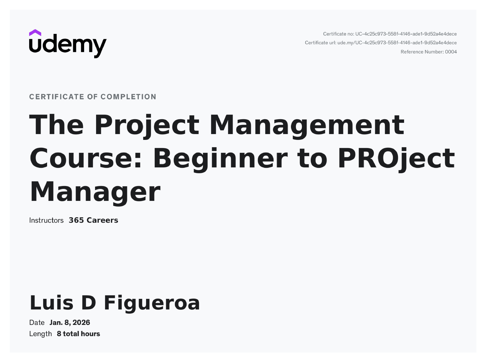
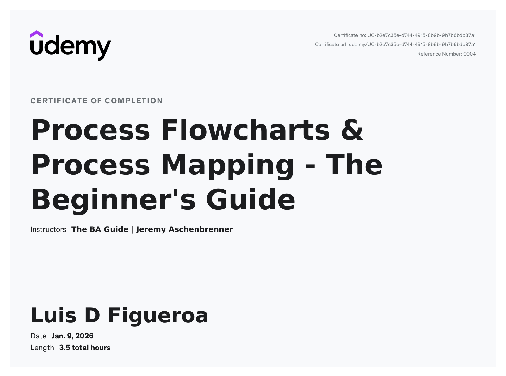
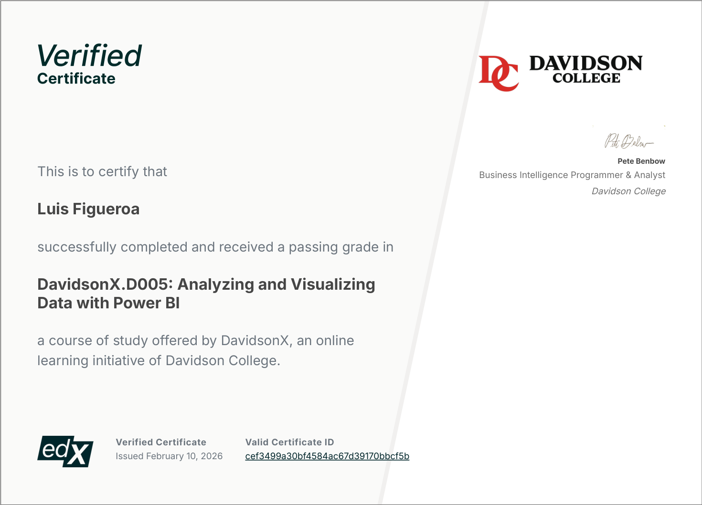
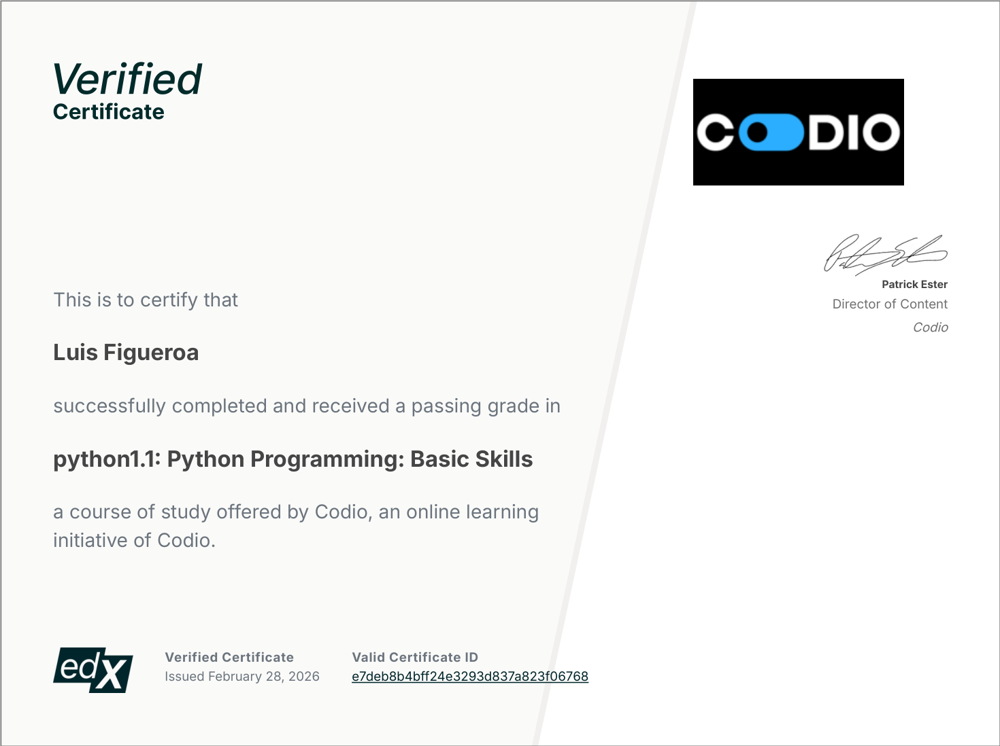

4 of 4 completed

Completed · January 2026
The Project Management Course: Beginner to PROject Manager
Core project management fundamentals — scoping, scheduling, budgeting, and stakeholder communication — taught by 365 Careers. (Udemy Business)

Completed · January 2026
Process Flowcharts & Process Mapping: The Beginner's Guide
Business process mapping fundamentals — flowchart notation, swimlanes, and documenting workflows for process improvement. Taught by The BA Guide. (Udemy Business)

Completed · February 2026
Analyzing and Visualizing Data with Power BI
A beginner's guide to working with data in Power BI — importing and preparing data for a data model, building visualizations, and creating shareable reports and dashboards in Microsoft's business analytics tool. (DavidsonX)

Completed · February 2026
Python Programming: Basic Skills
A video-free, hands-on introduction to Python — variables, operators, loops, conditionals, and lists — through runnable code examples and short coding exercises. (Codio)